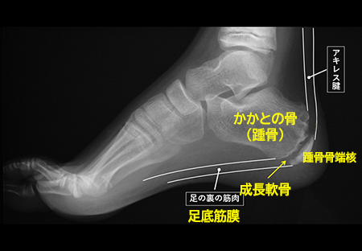
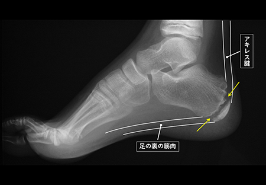

踵骨骨端症（シーバー病、セーバー病）
シーバー病（セーバー病）とは
発育期の子ども（特に10歳前後の成長期の男の子）に多い病気で、ぶつけたりひねったりした様子もないのに、歩いたりジャンプした時に足のかかと部分に痛みが生じるスポーツ障害です。
かかとの痛みを回避しようと、つま先で歩くようなことも見られます。
シーバー病（セーバー病）の名前は、1900年代前半にこの病気について報告をしたアメリカの整形外科医ジェームス・W・セーヴァーに由来しています。

症状
歩行時や運動時のかかとの痛み
かかとの圧痛や腫れ
痛みのせいでつま先歩きになる
原因
発育期の子どもの骨は、大人と違い、骨が成長していく部分（骨端線あるいは成長軟骨と言います）が残っています。(下図の矢印)

骨端線は物理的に弱く、かかと部分の骨（踵骨）には、アキレス腱と足の裏の筋肉がついているため、運動で繰り返し骨端線の周囲にひっぱる力が加わることで、炎症を起こしたり、骨に細かい傷がついたりすることが痛みの原因と言われています。
運動会やクラブ活動の練習、遠足で長い距離を歩いたといったことが痛みのきっかけになることがあります。
骨端線は15歳頃までには閉じてしまうため、これ以降に発症することは基本的になく、後遺症を残すこともありません。
診断
レントゲン検査で、骨端線よりも外側の部分の骨（骨端核）が他の部分にくらべて白くなっていたり（骨硬化）、いくつかの骨に分かれていたりする（分節化）などの変形があるか等を確認します。
超音波（エコー）検査やMRI検査を用いて、炎症や軟部組織の状態を詳しく調べることもあります。
治療
手術の必要はなく、痛みを伴う動作を控えることが重要で、運動の制限やかかと部分を保護する靴の中敷き（インソール）などを使用して、痛みが軽快するのを待つことで治ります。
運動前にアキレス腱とふくらはぎをしっかりと伸ばすストレッチを行うことも有効です。

参考文献
落合達宏, 足部の骨端症の痛み診療. MB Orthop. 34(12): 100-110, 2021
標準整形外科 (第14版). 医学書院. 2019
成長期のスポーツ障害. 日本小児整形外科学会スポーツ委員会. 2010